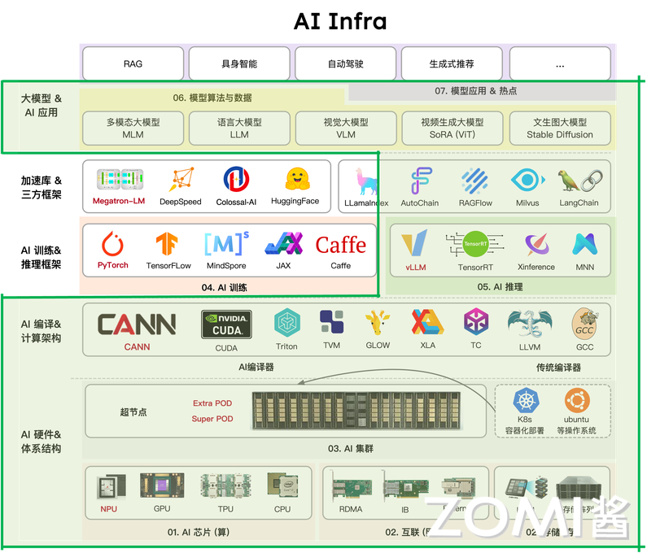
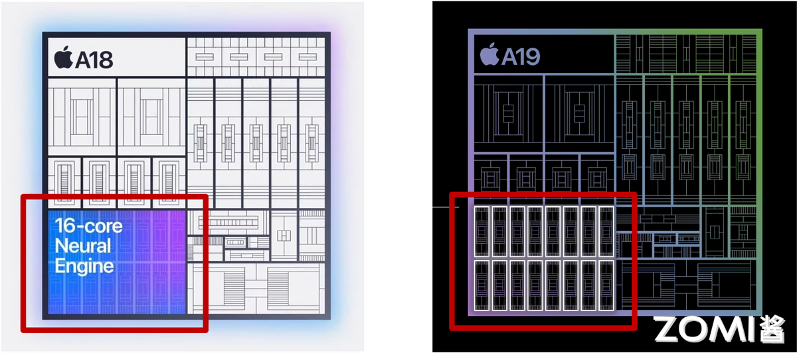
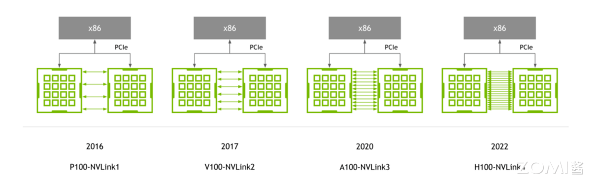
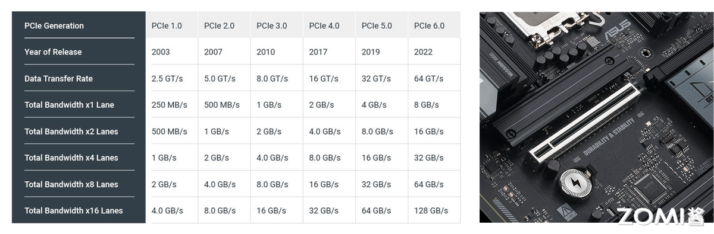
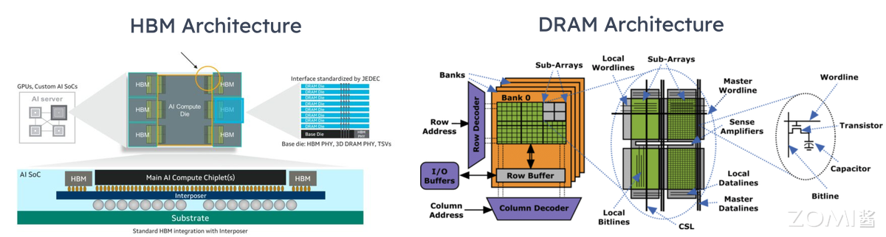
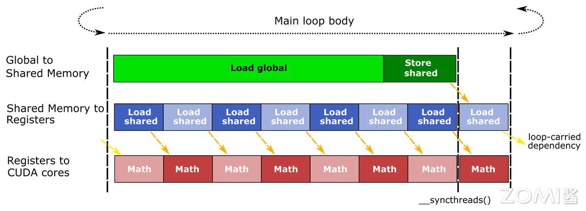
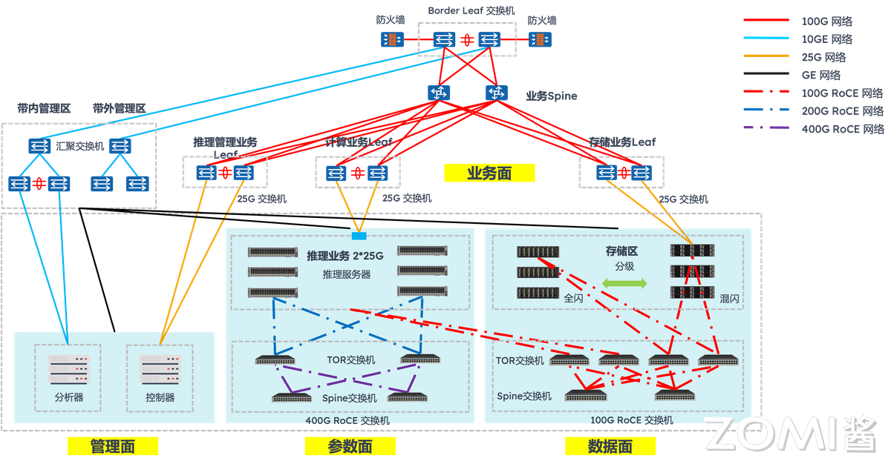
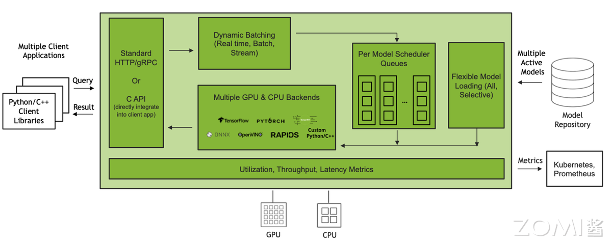
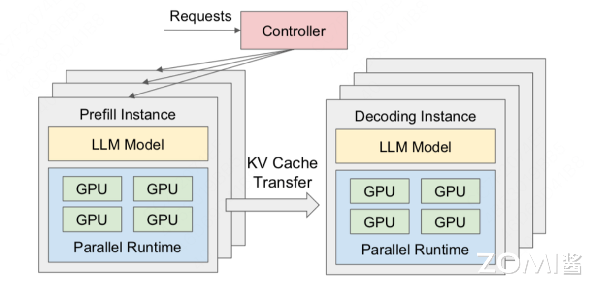

05.大模型推理与 AI Infra#
当大模型从实验室走向产业应用，能跑通已不再是目标，如何让模型在成本可控的前提下，以低延迟、高吞吐的姿态稳定对外提供大模型服务，成为大模型落地成败的关键。这一转变背后，大模型推理的技术正经历深刻重构：传统推理引擎被新一代大模型推理引擎取代，大模型推理算力向云端大算力+端侧轻算力异构延伸。
更重要的是，大模型推理早已不是单点优化，从模型压缩到输出采样的全流程，必须与 AI Infra 的算力-软件-存储分层架构深度绑定，才能构建起大模型推理效率的护城河。接下来的内我们将会从大模型推理的全流程进行入手，深入地看看大模型推理与 AI Infra 之间的关系。
1. 推理与 AI Infra 关系#

1.1 推理 AI 走向生产#
当大模型走向产业界的生产场景，一个普遍的困境逐渐凸显：许多企业耗费数月、数千万资金训练出的大模型，在实际部署时却屡屡碰壁 —— 要么因推理延迟过高被用户放弃，要么因单日推理成本超百万难以承受，最终沦为只能看、不能用 的技术摆设。这一困境背后，隐藏着一个被忽视的核心事实：训练只是大模型落地的 第一步，而推理才是决定大模型能否真正走进生产的生死门槛。
从产业价值来看，大模型训练的本质是一次性投入，无论是千亿参数模型的训练，还是 PB 级数据的投喂，一旦大模型训练完成，这部分成本便已固定。但推理不同，它是持续性消耗：只要大模型在服务，每一次用户请求、每一个生成 token，都需要占用算力资源，产生实时成本。
在大模型全生命周期（1 年）的成本中，推理占比高达 70%-90%，远超训练的 10%-30%。以 OpenAI 为例，其训练 GPT-3 的成本约 4600 万美元，而上线后每日推理成本就超 300 万美元，15 天即可覆盖训练总成本。
更关键的是，推理直接面对用户体验：电商客服机器人若高峰期延迟超 300ms，用户咨询转化率会下降 20%；手机端本地对话若响应超 1 秒，用户留存率会骤降 50%。在体验与成本的双重压力，让大模型推理成为比训练更难跨越的落地关卡。
2.1 推理与训练差异#
推理与训练的核心差异，进一步放大了这种门槛。训练的目标是追求精度上限，可以容忍高算力消耗与长耗时：训练一个千亿参数大模型，可用千卡 GPU 集群跑数周，数据处理可离线完成，无需应对动态请求；即便单次训练效率不高，只要最终模型精度达标，后续仍可通过推理复用成果。
但真正的推理的目标是平衡效率、成本与稳定性，面临三大训练无需应对的挑战：
动态负载，如教育类模型工作日晚上请求量是白天的 3 倍，电商模型 双 11 峰值是日常的 10 倍，需实时适配峰谷差异；
低延迟，训练可接受小时级耗时，而推理需毫秒级（端侧）至百毫秒级（云端）响应，否则无法满足生产场景；
资源约束，训练可通过暴力堆算力解决问题，而推理需在有限 GPU/TPU 资源下，最大化吞吐量与显存利用率，同样是千亿参数大模型，微调可用 8 张 H100，而推理需用 1 张 H100 支撑数百并发请求。
在大模型的推理和训练目标与场景的本质不同，决定了推理不能沿用训练的技术逻辑，必须单独构建 AI Infra 层的优化体系。
3.1 软硬件全栈协同#
大模型推理绝非单纯优化模型或选好硬件的单点问题，而是需软硬件全栈协同的系统工程。脱离软件的硬件是 空壳：即便拥有 NVIDIA H100 GPU，若缺乏 vLLM、SGLang 等推理引擎的算子融合、动态 Batching 优化，算力释放率不足 50%，千亿参数模型推理延迟仍会超 500ms。
大模型推理中脱离硬件的软件，即便推理引擎做了极致优化，若端侧硬件不支持 INT4 量化，7B 模型仍无法实现本地实时推理；脱离存储的协同更是瓶颈重重：即便算力与引擎适配完美，若 KV Cache 存储管理不当，在长序列推理时显存溢出，仍会导致推理中断。
某企业用 H100 部署千亿参数模型，仅优化模型压缩，未适配存储层 PagedAttention 机制，当输入 token 超 2048 时，显存利用率骤降 40%，推理延迟从 200ms 飙升至 800ms；补全存储层优化后，显存利用率提升至 90%，延迟回落至 250ms。
因此，大模型的推理优化必须贯穿硬件（算力层）- 软件（引擎层）- 存储（数据层）全栈，任何一层的缺失，都会让整体性能木桶短板效应凸显。
2. 硬件基础#
大模型推理的性能释放，本质是硬件特性与推理需求的精准匹配。训练可通过堆算力突破精度瓶颈，而推理需在低延迟、高吞吐、成本可控的三重约束下，最大化硬件资源利用率。
2.1. 计算芯片间差异#
计算芯片是大模型推理核心动力源，其算力、显存、带宽，直接决定大模型规模、推理速度与成本。当前主流计算芯片差异精准对应云端复杂推理、特定框架高吞吐推理、端侧低功耗推理三大场景。
从算力看，核心差异在精度适配与场景针对性：GPU 以通用算力为主，尤其适配 Transformer 架构的复杂计算，如 NVIDIA H100 的 FP8 达 3.3 PFLOPS，INT8 算力达 8.9 TOPS，既能支撑千亿参数模型的 FP8 推理，也能兼容百亿参数模型的 INT8 量化。端测 NPU 以低功耗算力为核心，高通骁龙 8 Gen3 NPU 的 INT4 算力 40 TOPS，功耗仅 50mW，刚好满足手机、物联网设备的大模型轻量推理需求。
显存是推理的数据战场，容量与类型决定模型规模上限：GPU 普遍搭载高容量 HBM，H100 配备 80GB HBM3，可容纳 70B 模型的 FP8 权重与 8192 token 的 KV Cache；Google TPU 更重性价比，TPU v5e 仅配 16GB HBM2e，成本为 H100 的 1/5，适合中小模型的推理。
端测 NPU 多采用共享内存设计，如苹果 A18 Pro Neural Engine 共享手机 LPDDR5 内存，通过 INT4 量化将 7B 模型体积压缩至 3.5GB，实现本地实时响应。

当然那，显存并非越大越好，推理场景更需容量与模型规模、序列长度的适配，80GB HBM 跑 7B 模型，会造成 90%显存浪费；16GB HBM 跑千亿模型，则会因显存不足频繁中断。
带宽则是连接算力与显存的桥梁，直接影响数据搬运效率：GPU 的 HBM 带宽堪称顶级，H100 的 HBM3 带宽达 3.35 TB/s，能支撑 Transformer 层每秒数千次的 QKV 数据读写；TPU v5e 的 HBM2e 带宽为 1.6 TB/s，虽低于 GPU，但满足中小模型的吞吐需求；NPU 的内存带宽以够用为目标，骁龙 8 Gen3 NPU 的内存带宽达 80 GB/s，配合 INT4 量化减少数据量，可实现 7B 模型亚秒级响应。推理中带宽瓶颈比训练更突出，训练可批量预处理数据，而推理需实时加载 KV Cache 与输入数据，若带宽不足，即便算力再强，也会出现算力空转。
2.2. 互连对并行推理影响#
当推理的大模型超单卡显存，或请求量破单卡吞吐时，需通过并行推理拆分任务到多卡/多节点，因此互连是决定并行效率关键纽带。不同互连方案的带宽、延迟、扩展性差异，直接影响 MP 与 DP 的性能。
NVLink
NVLink 核心优势是高带宽低延迟，专为 8 卡内近距离协同设计：H100 支持 NVLink 4.0，单链路带宽达 112.5 GB/s，8 卡互联总带宽 900 GB/s，延迟仅 10 μs。在大模型推理 TP 中，千亿参数模型需将 Transformer 层拆为 8 段分配到 8 张 H100，层间数据通过 NVLink 传输，若改用普通互连，延迟会升至 100μs 以上，整体推理延迟增加 30%。
在 DP 中，NVLink 可实现多卡显存池化，8 张 H100 的 80GB 显存整合为 640GB，支持 batch size 从 32 提升至 256，吞吐提升 6 倍。但其局限性明显：仅支持 NVIDIA GPU，且最大互联规模为 8 卡，无法满足超大规模集群需求。

PCIe
PCIe 是最普及的通用互连，优势是低成本高兼容性，支持 GPU、CPU、NPU 跨厂商适配：PCIe 5.0 单链路带宽 32 GB/s（x16 通道），延迟约 50μs，带宽为 NVLink 的 1/3、延迟为 5 倍，但成本仅为 NVLink 的 1/10。
在中小规模并行场景，PCIe 5.0 完全够用，如 4 张 AMD MI300 通过 PCIe 5.0 做 DP，处理 70B 大模型推理，吞吐达单卡的 3.5 倍（接近理想值 4 倍），延迟仅增加 15%。但并行规模超 8 卡时，PCIe 带宽瓶颈凸显：16 卡 PCIe 集群总带宽仅 512 GB/s，远低于 8 卡 NVLink 的 900 GB/s，推理延迟会飙升至 200μs 以上。

InfiniBand/RDMA
InfiniBand/RDMA 是大规模集群互连首选，核心优势是高扩展性低延迟，专为跨节点远距离协同设计：主流 InfiniBand 支持 400G/800G 带宽，延迟约 20μs，通过 RDMA 可绕过 CPU，直接实现节点间 GPU to GPU 内存数据传输。
Internet
以太网则凭借 RoCEv2 协议和 800G 硬件升级，成为千卡集群的新兴选择，正在重塑并行推理的成本性能曲线。传统以太网因 TCP/IP 协议栈开销大曾被认为不适合高性能计算，但 400G/800G 以太网结合 RoCEv2 技术后，实现了质的飞跃。
其核心突破在于三点：一是通过 RDMA 零拷贝传输，将端到端延迟降至 2μs 级；二是采用 UEC 1.0 规范的智能拥塞控制 CC 算法，解决了传统以太网的性能抖动问题；三是借助共封装光学（CPO），英伟达 Spectrum-XGS 交换机将每端口功耗从 30W 降至 9W，同时实现 95% 有效吞吐率。
在实际千卡集群部署中，以太网已展现出明确优势：阿里云则通过自研 HPN7.0 架构，用 51.2T 以太网交换机构建万卡级集群，其论文证实以太网方案在多模态推理场景中的性价比是 InfiniBand 的 2.3 倍。
2.3. 存储对模型和 Cache 影响#
大模型推理的存储需求具有分层特性：实时计算的 KV Cache、频繁访问的模型权重 CKPT、长期存储的输入输出数据，对速度-容量-成本的需求差异极大。
HBM、DRAM、NVMe、对象存储构成的存储层次，正是通过分层适配平衡性能与成本，任何一层缺失都会引发木桶短板效应。
HBM
HBM 是存储顶层，定位高速度低容量，服务实时计算数据：HBM 直接集成在计算芯片上，速度达 TB/s 级，容量多为几十 GB，成本每 GB 约 10 美元。推理中，HBM 核心存储高频数据：一是 KV Cache，8192 token 的 KV Cache 需 20-40GB，必须存于 HBM 以保低延迟。
二是模型核心权重，如 70B 模型的 Transformer 层核心权重（约 40GB），需实时加载供计算调用。若 HBM 容量不足，会导致 KV Cache 溢出，offload 到 CPU 的 DRAM，每次计算需从 DRAM 搬运数据，延迟从 200ms 增至 500ms。
DRAM
CPU 中的 DRAM 是存储中层，定位中速度中容量，提供扩展存储：DRAM 速度达 GB/s 级（DDR5 带宽 100 GB/s），容量可达百 GB 级，成本约每 GB 0.5 美元。
推理中，DRAM 存储次高频数据：一是模型扩展权重，如 70B 模型的词表权重，无需实时计算但需频繁访问；二是中间计算结果，如 Transformer 层的 FFN 输出，需暂存供后续层使用；三是预处理后的输入数据，如批量文本的 Tokenize 结果。

NVMe NVMe 是存储下层，定位低速度大容量，缓存冷数据与模型：NVMe 速度达 GB/s 级，容量可达 TB 级，成本约每 GB 0.1 美元。推理中，NVMe 核心作用是突破显存限制：
一是存储冷 KV Cache，32K token 推理中，早期 token 的 KV Cache 可迁移到 NVMe，需用时调回 HBM，仅牺牲 10%延迟；二是缓存低频模型，企业部署 10 个模型，可将 7 个低频模型存于 NVMe，调用时加载到 DRAM，加载时间约 10 秒。用 4TB NVMe 配合 H100，支持的最大序列长度从 8K 扩展至 32K，还可缓存 5 个千亿模型，满足多场景切换。
对象存储
对象存储是存储底层，定位极低速度极大容量，用于长期存储：对象存储速度达 MB/s 级，容量可达 PB 级，成本仅每 GB 0.01 美元。推理中，对象存储主要存低频数据：一是模型权重备份，如千亿模型原始权重 CKPT，仅在部署时下载；二是输入输出归档，如用户长文本、推理报告，需长期保存；三是微调数据集，仅在模型更新时加载。其核心价值是控成本。
2.4. 网络与网卡#
推理中的数据搬运延迟常被忽视：输入数据从存储经网络传至计算芯片，输出数据从计算芯片经网络传至用户，这一过程延迟占比可达 30%（如长文本推理中，数据搬运 150ms，计算 350ms）。
网络与 NIC 技术的优化，尤其是 NIC Offload，是降低搬运延迟、释放 CPU 资源关键。普通 NIC 依赖 CPU 处理协议，占用 10%-20% CPU 算力，而 SmartNIC 通过硬件卸载，可将 CPU 占用降至 5%以下。
传统网络与普通 NIC 的瓶颈，集中在协议开销与预处理延迟：数据传输需经对象存储→NIC→CPU→DRAM→PCIe→计算芯片链路，普通 NIC 需 CPU 处理 TCP/IP、HTTP 协议，每 GB 数据传输占用 1 个 CPU 核心的 100%算力。同时输入数据需 CPU 完成 Resize、Tokenize 后再传至 GPU，进一步增加延迟。
SmartNIC 通过硬件 Offload 突破瓶颈，实现传输-预处理-协议一体化加速：一是协议 Offload，SmartNIC 硬件支持 TCP/IP、RDMA，数据可直接从存储传至 DRAM/计算芯片，CPU 占用从 20%降至 2%——用 Mellanox ConnectX-7 SmartNIC 处理 10TB 数据，仅需 1 个 CPU 核心，节省 90%资源；二是预处理 Offload，部分 SmartNIC 集成专用单元，可直接完成图像 Resize、文本 Tokenize，如 AWS Nitro SmartNIC 将 JPEG 图像 Resize 延迟从 CPU 处理的 20ms 降至 5ms；三是压缩/加密 Offload，SmartNIC 硬件支持 GZIP 压缩、AES 加密，推理输出的万字报告可实时压缩，数据量减少 60%，传输延迟从 100ms 降至 40ms。
在端云协同的大模型推理中，SmartNIC 价值更突出：端侧设备算力有限，需将多模态数据特征上传云端，但原始数据传输量大。此时，端侧 SmartNIC 先提取特征并压缩，将 2MB 图像转化为 20KB 特征向量，数据量减少 99%，传输延迟从 50ms 降至 1ms；云端 SmartNIC 直接接收特征向量，无需 CPU 预处理，转发至 GPU 推理，整体端云协同延迟从 150ms 降至 50ms。
3. 运行时与推理引擎#
大模型推理的软件层效率，直接决定硬件算力能否转化为实际服务能力。而运行时与推理引擎正是软件层的核心：算子加速库提供底层计算支撑，推理引擎整合全流程能力，编译优化挖掘硬件潜力，模型压缩技术则平衡性能与资源约束。这四层技术环环相扣，共同构成大模型推理的软件效率护城河。
3.1. 算子加速库#
算子加速库是推理引擎的计算原子，负责实现最基础的矩阵运算、注意力计算等核心操作，其性能直接影响上层引擎的效率上限。当前主流算子加速库可分为通用优化型与场景专用型，分别适配不同推理需求。
cuBLAS 是英伟达官方推出的通用矩阵算子加速库，优势在于稳定性与兼容性，它针对英伟达 GPU 的 Tensor Core 做了深度优化。但 cuBLAS 的局限性也明显：针对大模型特有的注意力计算等操作，需上层框架二次封装，无法直接发挥最优性能。
cutlass 是英伟达开源的可定制算子加速库，定位灵活优化，允许开发者根据模型架构定制内核。与 cuBLAS 的黑盒调用不同，cutlass 支持手动调整线程块大小、数据布局、精度类型。针对端侧 NPU 的 INT4 量化运算，cutlass 可定制低精度数据对齐逻辑，减少数据搬运开销，使推理延迟降低 15%。

Flash Attention 则是注意力计算专用库，专为解决 Transformer 架构的访存瓶颈而生。传统注意力计算需频繁读写全局显存，Flash Attention 通过分块计算+寄存器复用，将数据优先存于 GPU 寄存器与共享内存，大幅减少显存访问。
3.2. 推理引擎对比#
推理引擎是整合算子加速库、编译优化、调度逻辑的全流程工具，不同推理引擎的设计理念差异，决定了其在兼容性、性能、部署成本上的侧重。
vLLM 是近年来崛起的高吞吐推理引擎，核心创新是 PagedAttention 内存管理，专为生成式模型的长序列推理设计。大模型推理因 KV Cache 连续内存分配导致显存利用率低，vLLM 通过分页管理将显存利用率提升至 90%以上。
SGLang 则是 动态提示与高吞吐兼顾 的推理引擎，核心优势是高效处理结构化 Prompt 与 MCP 调用场景，填补了 vLLM 在动态交互场景的短板。借鉴了 vLLM 的 PagedAttention 机制以保证高吞吐，同时新增 Prompt-as-Code 能力，支持通过代码逻辑定义动态提示（如条件分支、循环生成、工具调用参数注入），无需频繁修改模型输入格式。但其兼容性较弱，暂不支持非英伟达硬件，且对多模态模型的适配仍在完善中，更适合智能助手、代码生成等复杂交互逻辑的生成式场景。
FasterTransformer（FT）是英伟达开源的分布式推理引擎，侧重多卡/多节点并行推理，专为千亿级以上参数模型设计。支持多种并行策略，在多节点集群中，可根据各卡负载调整任务分配，避免算力浪费。但 FT 的部署成本较高，需手动配置并行策略，更适合超大规模模型的专用集群部署，而非中小规模场景。
3.3 编译优化#
编译优化是推理引擎的性能放大器，通过重构计算图、优化内核执行逻辑，减少数据搬运与计算冗余，将硬件算力利用率从 50%提升至 90%以上。其中，图融合、Kernel 调优、kernel 融合是最核心的三类优化手段，直接针对大模型推理的关键瓶颈。
图融合
图融合的核心是合并冗余计算节点，减少计算图中的数据搬运次数。大模型的计算图包含大量独立算子，传统执行方式中，每个算子的输出需写回显存，再读取到下一个算子，数据搬运延迟占比超 40%。
编译优化通过算子依赖分析，将连续执行的算子合并为单个融合算子，例如将 Transformer 层的 QKV 投影→Attention 计算→LayerNorm→残差连接 4 个算子融合为 1 个，显存读写次数从 8 次减少至 2 次，延迟降低 30%-50%。
Kernel 调优
Kernel 调优是适配硬件架构的参数优化，通过调整内核执行的线程布局、内存访问模式，最大化硬件利用率。GPU 的计算能力依赖线程块（block）与线程束（warp）的高效调度，例如 H100 的每个 SM 支持最多 32 个线程块，每个线程块最多 1024 个线程，自动测试不同线程块大小（如 128、256、512）的执行性能，选择最优参数。针对端侧 NPU 的低带宽内存，Kernel 调优还会优化数据对齐方式，减少非对齐访问导致的带宽浪费。
kernel 融合
kernel 融合是针对特定场景的深度融合，比通用图融合更聚焦大模型的核心计算链路。例如针对 Transformer 层的多头注意力计算，普通图融合仅合并相邻算子，而 kernel 融合会重构计算逻辑：将多头拆分→每个头 Attention 计算→多头合并三步整合为单个内核，同时利用 GPU 的共享内存缓存多头参数，避免重复读取。
针对多模态模型的文本-图像特征融合，kernel 融合可将文本特征投影→图像特征归一化→交叉注意力融合。值得注意的是，kernel 融合需针对模型架构定制，通用性较弱。
3.4. 模型压缩#
当推理资源有限时，需通过模型压缩技术降低计算量与存储占用，量化、蒸馏、结构化剪枝是当前最成熟的三类技术，分别从数据精度模型规模权重冗余三个维度实现优化，且需与推理引擎深度协同才能发挥效果。
低比特量化
量化通过降低数据精度减少计算量与显存占用，是最易用的压缩技术。8bit 量化（如 INT8）适合云端场景：在保持 95%以上精度的前提下，可将模型显存占用降低 75%（FP32→INT8），计算量降低 75%。
4bit 量化则适合端侧场景：将模型显存占用再降 50%（INT8→INT4），7B 模型可压缩至 3.5GB，适配手机 8GB 内存——高通骁龙 8 Gen3 NPU 原生支持 INT4，Llama 2 经 4bit 量化后，手机端响应延迟<800ms，功耗降低 60%。
混合精度量化（如 FP8+INT4）则兼顾精度与性能：云端用 FP8 量化核心计算层，用 INT4 量化非核心层（如词表嵌入），在 H100 上实现千亿模型吞吐提升 2.5 倍，精度损失<2%。
蒸馏
蒸馏是将大模型知识迁移到小模型，在降低模型规模的同时保留性能。其核心是通过教师模型指导学生模型训练，使小模型学习大模型的输出分布、注意力权重等关键信息。蒸馏需与推理引擎协同：学生模型的架构需适配引擎的算子优化，否则蒸馏后的性能提升会被引擎适配不足抵消。
结构化剪枝
结构化剪枝通过移除冗余权重结构降低计算量，且不影响硬件加速。与非结构化剪枝不同，结构化剪枝移除完整注意力头整个 Transformer 层或卷积核组，保证剪枝后的模型仍能被 GPU Tensor Core、端侧 NPU 加速。
4. 并行与内存管理#
大模型推理面临两大核心瓶颈：一是千亿级参数模型无法装入单卡显存，二是高并发请求下算力利用率不足。而并行策略解决算力分配问题，内存管理突破显存容量限制，两者协同构成大模型推理规模化落地的核心技术支撑。
4.1. 数据 vs MP#
并行策略的核心是拆分任务以适配硬件，DP 与 MP 的选择，取决于推理场景的模型规模与请求并发量。两者并非互斥，实际落地中常结合使用以平衡性能与显存。
DP 的本质是拆分请求 batch，多卡运行相同模型：将用户请求批量分为多份，每张卡加载完整模型并处理部分 batch，最后汇总结果。其优势在于实现简单、通信开销低。
MP 则是拆分模型结构，多卡协同运行，分为 Tensor 并行与 Pipeline 并行两类，专为突破单卡显存限制设计。
Tensor 并行聚焦算子级拆分，将 Transformer 层的矩阵运算（如 QKV 投影、Attention 计算）拆分为多卡执行，其优势是通信开销集中在算子内部，延迟低，适合计算密集型的大模型单层推理。
Pipeline 并行则聚焦层级拆分，将模型的 Transformer 层按顺序分配到多卡（如 16 张卡各负责 10 层），前卡计算完后将中间结果传给后卡，形成流水线。但需解决 Bubble 延迟（部分卡等待数据空闲），通常需结合 Micro Batch 处理提升利用率，适合层数多的超大规模模型。
4.2. KV Cache 管理与分层存储#
KV Cache 是大模型推理的显存大户——其大小随输入 token 长度线性增长。若 Cache 管理不当，长序列推理会直接导致显存溢出。高效的 KV Cache 管理与分层存储，是支撑长文本、多轮对话场景的关键。
KV Cache
KV Cache 管理的核心是打破连续内存依赖。传统方案为每个请求分配连续显存存储 KV Cache，导致内存碎片多、利用率仅 40% 以下；而 PagedAttention 机制借鉴操作系统内存分页思想，将 KV Cache 拆分为固定大小的页面，通过页表记录页面位置，实现非连续存储与动态复用。此外，部分推理引擎还支持 KV Cache 压缩，进一步降低显存压力。
分层存储
分层存储则是用存储容量换显存空间，通过热冷数据分离扩展 KV Cache 存储能力。
热数据（最近几百个 token 的 KV Cache）需低延迟访问，保留在 HBM 中以保证计算速度；冷数据（早期 token 的 KV Cache）访问频率低，迁移至 DRAM 或 NVMe SSD 存储，需用时再通过高带宽链路（如 PCIe 5.0、NVLink）调回 HBM。
4.3. 激活 Offload 与分布式 KV#
激活 Offload
除 KV Cache 外，推理过程中产生的 Activation（激活值，中间计算结果） 也是显存占用大户，若不做优化，会与 KV Cache、模型权重争夺显存。而 Activation Offload 与分布式 KV 技术，分别从本地显存释放与跨节点存储扩展两个维度解决这一问题。
Activation Offload 的核心是计算后及时迁移：在 Activation 参与完当前层计算后，立即将其从 HBM 迁移至 DRAM 或 NVMe SSD，待后续层需要时再调回。
与 KV Cache 不同，Activation 的访问具有顺序性（仅后续层需使用），无需频繁读写，因此 Offload 开销较低。端侧场景中，高通骁龙 NPU 支持 Activation 压缩+Offload，将 7B 模型的 Activation 压缩后存于手机 RAM。
需注意的是，Activation Offload 需与算子计算同步设计，利用数据传输的间隙触发 Offload，避免增加额外延迟。
分布式 KV
分布式 KV 则是跨节点扩展 KV Cache 存储，专为超大规模集群推理设计。当推理集群规模达千卡以上，单节点的 DRAM/NVMe 仍无法支撑海量请求的 KV Cache 存储，需将 KV Cache 分散存储在多节点的存储资源中，通过 RDMA 或 RoCEv2 协议实现低延迟访问。
4.4. MoE 路由与负载均衡#
MoE 通过稀疏激活专家层降低计算量，但推理时面临两大挑战：一是路由策略需精准选择适配请求的专家，二是负载均衡需避免部分专家过载。这两点直接决定 MoE 模型的推理性能与服务稳定性。
MoE 路由
MoE 路由的核心是高效匹配请求与专家，主流策略分为 Top-K 路由与自适应路由。Top-K 路由选择与请求特征最匹配的 K 个专家，例如 GPT-4 MoE 采用 Top-2 路由，每个请求激活 2 个专家，在保证 98% 精度的前提下，计算量仅为稠密模型的 1/5；Top-1 路由激活 1 个专家，计算量更低（稠密模型的 1/10），但精度损失约 3%，适合端侧轻量 MoE 模型（如手机端 3B MoE）。
自适应路由则根据请求类型动态调整 K 值——例如文本生成请求用 Top-2 路由，分类请求用 Top-1 路由，字节跳动 MoE 推理框架采用该策略，使推理效率提升 15%。
负载均衡
负载均衡的关键是避免部分专家过载。由于请求特征分布不均，部分专家可能被频繁选中，导致其处理延迟飙升至其他专家的 3 倍以上。
常用均衡方法包括：一是负载感知路由，实时统计各专家的当前负载（如待处理请求数），优先将新请求分配给负载低的专家；二是专家容量控制，为每个专家设置最大并发处理量，超出容量的请求暂存队列或分配给备用专家；三是动态专家扩展，在高峰时段临时激活备用专家，低谷时段关闭部分专家，平衡性能与成本。
5. 服务化与编排#
当大模型推理从单卡测试走向规模化服务，仅靠硬件优化与引擎调优已不够，还需通过服务化部署整合资源、智能编排调度请求，才能解决资源浪费、延迟波动、服务不稳定等落地痛点。
5.1. 部署方式#
部署方式的选择，核心是匹配大模型规模与业务需求，不同方式在资源利用率、部署复杂度、服务弹性上的差异，直接影响推理成本与稳定性。
单模型单实例是最基础的部署方式：为单个模型分配独立实例，实例间完全隔离，不会相互干扰。其优势是部署简单、故障影响范围小。但缺点是资源利用率极低，非高峰时段 GPU 利用率可能低于 20%，且无法支撑千亿参数模型，仅适合中小模型（≤13B 参数）的轻量化服务。
多模型部署则是共享资源、提升利用率：在同一实例上部署多个模型，通过动态调度分配 GPU 算力与显存。但需解决资源抢占问题——通常通过显存限制与算力调度实现隔离。这种方式适合多场景、中小模型的业务，如同时需要对话、分类、生成的综合大模型服务。
Sharded Serving专为千亿级大模型设计：将超大规模模型拆分为多个分片，每个分片部署在独立实例上，推理时通过网络协同计算。其核心价值是突破单实例显存限制。此外，Sharded Serving 还支持跨节点扩展，比如将分片部署在不同机柜的 GPU 上，通过 RoCEv2 以太网低延迟通信，实现万卡级集群的大模型服务。但部署复杂度高，需解决分片间的通信同步，适合通用大模型+高并发场景，如云端的公共 API 服务。

5.2. 调度策略#
调度策略是平衡资源与体验的关键，通过提前储备资源、动态调整容量、优先保障核心请求，解决推理服务的冷启动延迟、峰谷资源错配、核心请求被挤兑三大痛点。
Warm Pool（预热池） 针对冷启动延迟：推理实例启动时需加载模型权重，若流量突增时再新建实例，会导致请求排队延迟超秒级。Warm Pool 的逻辑是提前启动备用实例，在非高峰时仅加载模型不处理请求，流量突增时直接将请求转发给备用实例，冷启动延迟从 10 分钟降至 1 秒内。
预测伸缩解决峰谷资源错配：传统伸缩策略存在滞后性，高峰已到但资源未扩，导致延迟飙升；低谷时资源未缩，造成浪费。预测伸缩通过历史流量+业务特征预测未来需求，提前调整实例数量。
优先级队列保障核心请求体验：当流量超限时，非核心请求可能挤兑核心请求（如付费用户对话），导致核心服务 SLA 失效。优先级队列的逻辑是按请求重要性分级调度，为核心请求分配高优先级，非核心请求分配低优先级，GPU 资源优先处理 P0 请求，P2 请求排队或降级处理。
5.3. 服务化框架对比#
服务化框架是整合部署、调度、监控的工具载体，不同框架的设计理念差异，决定了其在云原生适配、性能、易用性上的侧重，选择需结合团队技术栈与业务规模。
KServe是云原生优先的框架，基于 Kubernetes 构建，适合大规模、多团队协同的推理服务。其核心优势是标准化与可扩展性——通过 CRD（自定义资源）定义推理服务，支持模型版本管理（灰度发布、回滚）、多模型部署、自动伸缩等云原生能力；同时兼容多种推理引擎（TensorRT、vLLM、ONNX Runtime），可通过 Transformer 组件实现输入预处理（如文本 Tokenize）与输出后处理（如结果格式化），无需额外开发服务。
Triton Inference Server是性能优先的框架，英伟达官方优化，适合 GPU 推理的高性能场景。其核心优势是多硬件/多引擎兼容+低延迟调度——支持 GPU、CPU、NPU 等硬件，可调用 TensorRT、vLLM、SGLang 等引擎；内置动态 Batching、模型并行、优先级调度等功能，在 H100 上运行 70B 模型时，吞吐比 KServe 高 30%，P99 延迟低 20%。此外，Triton 的模型仓库功能支持从 S3、GCS 等对象存储加载模型，无需本地存储，适配云端分布式部署。但 Triton 的云原生能力较弱，更适合聚焦性能、以 GPU 为主的推理场景。

Ray是分布式计算+推理编排的框架，适合复杂推理场景。其核心优势是灵活的任务编排——可将推理拆分为多个步骤，通过 Ray 的任务调度器分配到不同节点，支持跨节点的 Activation Offload、分布式 KV Cache。但 Ray 的模型管理能力较弱，更适合需要复杂流程编排的推理服务。
5.4. 请求路由与 SLA#
请求路由决定流量如何分配到实例，SLA 保障则确保服务质量达标——两者结合是大模型推理服务稳定运行的核心，尤其 P99 延迟（99%请求的延迟上限）是衡量服务体验的关键指标，需通过技术手段针对性优化。
请求路由的核心是均衡负载+就近访问：一是负载均衡路由，避免部分实例过载，常用策略有轮询、最小连接数；二是地域路由，将用户请求转发至就近的推理节点，减少网络延迟；三是版本路由，支持模型灰度发布，通过路由控制实现风险可控，避免全量发布导致的服务故障。
SLA 保障需围绕可用性、延迟、容错构建三层防护：一是可用性保障，通过实例冗余+故障转移实现高可用；二是延迟保障，通过限流+降级防止流量超限导致延迟飙升；三是容错保障，通过重试+超时控制处理临时故障。
6. 推理全流程优化快速#
大模型推理并非模型计算的单点行为，而是覆盖输入预处理→计算调度→输出反馈的全流程。以下从大模型推理的全流程关键环节切入，拆解实践中的核心优化逻辑。
6.1. 数据预处理#
预处理负责将原始数据转换为大模型可识别的格式。尽管单 Step 计算量小，但预处理延迟占比可达 30%（如长文本 tokenize 耗时 15ms，计算仅 35ms），多模态场景下需协同处理多类数据，成为易被忽视的瓶颈。
文本预处理的核心是高效 tokenize：传统单 tokenize 在高并发场景下延迟显著，工程中需通过批量处理+硬件加速优化。此外，预处理结果缓存可进一步减少重复计算，某电商客服场景中，缓存命中率达 60%，预处理总延迟降低 40%。
图像与音频预处理需硬件适配与特征复用：图像预处理（Resize、归一化、通道转换）易因格式差异导致延迟，工程中常通过硬件单元卸载优化，例如苹果 A18 Pro Neural Engine 集成图像 Resize 硬件模块，将 1080P 图像预处理延迟从 20ms 降至 3ms；云端则用 GPU CUDA Core 处理图像缩放，效率比 CPU 高 8 倍。音频预处理（MFCC 特征提取、降噪）的核心是特征复用，例如语音对话场景中，将 10 秒音频的 MFCC 特征缓存，后续 1 秒内的短语音可基于缓存补全特征，预处理延迟从 12ms 降至 3ms。多模态场景下，还需解决预处理同步问题（如文本 tokenize 完成，图像仍在 Resize），工程中通过任务队列优先级调度，确保多类数据同步进入计算环节，避免某类数据等待超时。
6.2. PD 分离执行#
生成式模型推理存在 Prefill 与 Decode 两个阶段：Prefill 阶段处理全部输入 token，属于计算密集型；Decode 阶段逐 token 生成输出，属于访存密集型，主要耗时 KV Cache 读写。若将两者混合同步执行，会导致 Prefill 时排队，Decode 时闲置。
Prefill/Decode 分离的核心是资源隔离与任务并行：实践中常将两类任务分配至不同 GPU，避免相互抢占资源。例如 20% GPU 实例专门处理 Prefill，80%实例处理 Decode，通过分布式调度器动态分配任务：用户输入长文本时，优先转发至 Prefill，计算完成后将 KV Cache 同步至 Decode，立即启动逐 token 生成，实现 Prefill 结束即 Decode 开始的流水线衔接。
端侧场景则通过轻量化分离适配资源约束：例如手机端推理 7B 模型时，将 Prefill 阶段的 QKV 计算拆解为 CPU 预处理+NPU 计算，CPU 先完成 tokenize 与数据对齐，NPU 专注矩阵运算；Decode 阶段则关闭 NPU 部分计算单元，优先保障 KV Cache 访存速度，满足实时对话需求。

6.3. 动态 Batch 与 Token 并行#
Dynamic Batching 解决短序列请求的算力复用问题，Token Parallel 突破长序列的显存与调度瓶颈。
Dynamic Batching 的工程关键是动态平衡吞吐-延迟：并非 batch size 越大越好，需结合请求队列长度+最大等待时间动态调整。例如电商客服场景非高峰时队列短，将 batch size 设为 8、最大等待 5ms，避免单请求等待过久；高峰时队列长度超 100，将 batch size 提至 32、等待时间设为 10ms，优先提升吞吐，通过动态 Batching 策略配置，GPU 利用率从 40%提升至 70%，同时 P99 延迟控制在 250ms 内。工程中还需避免大 batch 饿死小请求，通过 batch 拆分+优先级插队，确保核心请求可打断大 batch 排队，优先进入计算。
Token Parallel 则针对长序列推理瓶颈：传统单卡处理长序列时，KV Cache 与计算张量占用显存超 80%，调度效率骤降。将长序列拆分为多个子序列分配至不同 GPU 并行处理，同时结合 PagedAttention 的页面复用机制，避免子序列间的显存碎片。
实际落地中，采用 Token Parallel 拆分长序列+Dynamic Batching 合并短请求：先将长序列拆分为子序列，再与短请求批量合并计算，同时兼顾长序列处理能力与短请求低延迟需求。
6.4. 采样加速与输出流式化#
输出阶段的优化直接影响用户体验：采样环节的 beam search、top-k 虽计算量仅占 10%，但迭代式计算导致延迟占比达 20%；而全量输出（如等待 100 个 token 生成完再返回）会让用户感知延迟超秒级，成为体验短板。
采样加速的核心是硬件算子优化与策略动态调整：工程中优先用硬件加速采样核心步骤，如将 beam search 的候选 token 排序、累积概率计算封装为专用算子；端侧 NPU（如苹果 Neural Engine）优化 top-k 算子。文本生成场景用 beam search（beam size=4），但通过 early stopping 避免冗余迭代，延迟减少 30%。
输出流式化降低用户感知延迟：流式化通过 Server-Sent Events（SSE）协议，将生成的 token 逐段推送给用户。实际解决流式与采样协同，同时控制推送粒度，平衡实时性与网络效率。端侧场景则通过本地流式缓存暂存前 20 个 token，减少片内网络交互延迟。
全流程中预处理的批量加速需匹配后续计算的 batch size，PD 分离需衔接存储层的 KV Cache 管理，流式输出需同步采样策略调整。脱离场景的单点优化，无法真正提升服务体验，只有将每个环节视为整体链条的一部分，才能让推理服务既高效又易用。当然过程中还有很多优化点，我们将会在后面的内容详细展开。
7. 小结与思考#
大模型推理的竞争，本质是推理全流程与 AI Infra 分层架构协同优化能力。从端侧 NPU 的 INT4 量化到云端 GPU 的 PD 分离，从 Trition 的动态 Batching 到 KV Cache 的分页管理，每一个优化环节都需 AI Infra 深度支撑—，脱离 AI Infra 的单点技术，无法真正解决大模型推理落地的成本与延迟问题。
过去，CUDA 生态构建了 NVIDIA 的壁垒；未来，异构兼容、端云智能协同等推理将成为 AI Infra 的核心方向。对于开发者而言，理解推理全流程的每个环节需要 AI Infra 哪一层支撑，是把握 AI 趋势的关键。大模型的价值最终要通过推理落地实现，而 AI Infra 正是让这一价值的重要引擎。
参考文献#
[1] OpenAI. AI and Compute. 2018. https://openai.com/research/ai-and-compute
[2] Narayanan, D., et al. Efficient Large-Scale Language Model Training on GPU Clusters Using Megatron-LM. SC 2021. https://arxiv.org/abs/2104.04473
[3] Google Cloud. AI Infrastructure for Generative AI. 2023. https://cloud.google.com/ai-infrastructure
[4] Pope, R., et al. Efficiently Scaling Transformer Inference. arXiv 2022. https://arxiv.org/abs/2211.05102
[5] NVIDIA. Training vs. Inference: What’s the Difference? 2021. https://blogs.nvidia.com/blog/2021/08/25/training-vs-inference-whats-the-difference
[6] Kwon, W., et al. vLLM: Easy, Fast, and Cheap LLM Serving with PagedAttention. SOSP 2023. https://arxiv.org/abs/2309.06180
[7] SGLang Team. SGLang: A Fast Serving Framework for Large Language Models. GitHub 2024. https://github.com/sgl-project/sglang
[8] NVIDIA. H100 Tensor Core GPU Architecture Whitepaper. 2022. https://resources.nvidia.com/en-us-tensor-core
[9] Qualcomm. Snapdragon 8 Gen 3: AI Performance Overview. 2023. https://www.qualcomm.com/snapdragon-8-gen-3
[10] Google. TPU v5e: Efficient AI Training and Inference. 2023. https://cloud.google.com/tpu
[11] NVIDIA. NVLink and NVSwitch: Scaling GPU Performance. 2022. https://www.nvidia.com/en-us/data-center/nvlink
[12] InfiniBand Trade Association. InfiniBand Architecture Specification Vol. 1. 2023. https://www.infinibandta.org
[13] Alibaba Cloud. HPN7.0: High-Performance Ethernet for AI Clusters. 2024. https://www.alibabacloud.com/blog
[14] Kwon, W., et al. PagedAttention: Memory-Efficient Serving of LLMs. SOSP 2023. https://arxiv.org/abs/2309.06180
[15] Intel. NVMe SSD for AI Inference Caching. 2023. https://www.intel.com/content/www/us/en/products/details/ssds
[16] Microsoft. ONNX Runtime for Large Model Inference. 2023. https://onnxruntime.ai
[17] NVIDIA. FasterTransformer: Distributed Inference Library. GitHub 2023. https://github.com/NVIDIA/FasterTransformer
[18] AnyScale. Ray Serve: Scalable Model Serving. 2023. https://docs.ray.io/en/latest/serve/index.html
[19] Frantar, E., et al. GPTQ: Accurate Post-Training Quantization for LLMs. ICLR 2023. https://arxiv.org/abs/2210.17323
[20] Hinton, G., et al. Distilling the Knowledge in a Neural Network. NIPS 2015. https://arxiv.org/abs/1503.02531
[21] Fedus, W., et al. Switch Transformer: Scaling to Trillion Parameter Models. JMLR 2022. https://arxiv.org/abs/2101.03961
[22] ByteDance. Adaptive Routing for MoE Inference. 2024. https://www.bytedance.com/en/tech/blog
[23] Kubernetes. KServe: Kubernetes Custom Resource for Model Serving. 2023. https://kserve.github.io/website
[24] NVIDIA. Triton Inference Server: Architecture and Best Practices. 2023. https://developer.nvidia.com/triton-inference-server
[25] Google SRE. Monitoring Distributed Systems: The Four Golden Signals. 2023. https://sre.google/sre-book/monitoring-distributed-systems
[26] OWASP. AI Security and Privacy Guide. 2024. https://owasp.org/www-project-ai-security
[27] Apple. A18 Pro Neural Engine: On-Device AI Performance. 2024. https://www.apple.com/ios/ios-18
[28] OpenAI. Streaming and Sampling Strategies for GPT Models. 2023. https://platform.openai.com/docs/guides/text-generation
[C-1] 人工智能数据工程中心.《李飞飞团队年度报告揭底大模型成本：Gemini Ultra是GPT-4的2.5倍》. 2024-04-17. https://aidc.shisu.edu.cn/c2/c1/c13626a180929/page.htm
[C-2] 知乎专栏.《大模型的成本和效率》. 2025-03-18. https://zhuanlan.zhihu.com/p/31033488927
[C-3] AIbase.《AI成本结构极端分化：训练烧钱与推理低价的商业困局》. 2025-08-23. https://www.aibase.com/zh/news/18660
[C-4] 搜狐科技.《打破效率与成本的权衡：数据中心中AI推理的未来》. 2025-02-13. https://www.sohu.com/a/858654161_121902920
[C-5] CSDN博客.《AI大模型训练成本到底有多大？》. 2024-06-06. https://blog.csdn.net/giszz/article/details/139506830
[C-6] AI工具箱.《AI成本结构极端分化：训练烧钱与推理低价的商业困局》. 2025-06-06. https://ai-kit.cn/14668.html
视频#
这个内容还没有，非常希望您参与到这个开源项目中，B 站给 ZOMI 留言哦！